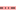

<!doctype html>
<html lang="en">
    <head>
        <meta charset="utf-8">
        <meta http-equiv="X-UA-Compatible" content="IE=edge">
        <meta name="viewport" content="initial-scale=1,user-scalable=no,maximum-scale=1,width=device-width">
        <meta name="mobile-web-app-capable" content="yes">
        <meta name="apple-mobile-web-app-capable" content="yes">
        <link rel="stylesheet" href="css/leaflet.css">
        <link rel="stylesheet" href="css/qgis2web.css"><link rel="stylesheet" href="css/fontawesome-all.min.css">
        <link rel="stylesheet" href="css/MarkerCluster.css">
        <link rel="stylesheet" href="css/MarkerCluster.Default.css">
        <link rel="stylesheet" href="css/leaflet-search.css">
        <link rel="stylesheet" href="css/easy-button.css">
        <style>
        html, body, #map {
            width: 100%;
            height: 100%;
            padding: 0;
            margin: 0;
        }
        </style>
        <title></title>
    </head>
    <body>
        <div id="map">
        </div>
        <script src="js/qgis2web_expressions.js"></script>
        <script src="js/leaflet.js"></script>
        <script src="js/multi-style-layer.js"></script>
        <script src="js/leaflet.rotatedMarker.js"></script>
        <script src="js/leaflet.pattern.js"></script>
        <script src="js/leaflet-hash.js"></script>
        <script src="js/Autolinker.min.js"></script>
        <script src="js/rbush.min.js"></script>
        <script src="js/labelgun.min.js"></script>
        <script src="js/labels.js"></script>
        <script src="js/leaflet.markercluster.js"></script>
        <script src="js/leaflet-search.js"></script>
        <script src="js/easy-button.js"></script>
        <script src="data/_2.js"></script>
        <script src="data/_3.js"></script>
        <script src="data/_4.js"></script>
        <script>
        var map = L.map('map', {
            zoomControl:true, maxZoom:28, minZoom:1
        })
        var helloPopup = L.popup().setContent('<p style="text-align: justify;"><font face="Times New Roman">Карта виртуального тура позволяет привязать изображения к определенной территории, что существенно улучшает ориентировку пользователя в виртуальном туре, в особенности, если в нем используется большое количество панорамных изображений. Карта виртуального тура часто имеет радар, который показывает пользователю, в какой точке обзора он находится в данный момент. Также интерактивная карта виртуального тура позволяет осуществлять быстрый переход между точками обзора, даже если они находятся не рядом друг с другом. Оригинальная подсветка позволяет выделять объекты на улицах и высвечивать необходимые объекты на территории. Если вам необходимо разработать проект для освещения магазина, кафе или склада, то можно обратиться в Компанию Инвентрейд которая специализируется на данном виде деятельности, индивидуальный подход к каждому проекту обеспечит идеальное выполнение работы. </p>');
            L.easyButton('fa-globe', function(btn, map){
            helloPopup.setLatLng(map.getCenter()).openOn(map);
        }).addTo(map);
        var hash = new L.Hash(map);
        map.attributionControl.setPrefix('<a href="https://github.com/tomchadwin/qgis2web" target="_blank">qgis2web</a> &middot; <a href="https://leafletjs.com" title="A JS library for interactive maps">Leaflet</a> &middot; <a href="https://qgis.org">QGIS</a>');
        var autolinker = new Autolinker({truncate: {length: 30, location: 'smart'}});
        var bounds_group = new L.featureGroup([]);
        function setBounds() {
            if (bounds_group.getLayers().length) {
                map.fitBounds(bounds_group.getBounds());
            }
        }
        map.createPane('pane_GoogleTerrain_0');
        map.getPane('pane_GoogleTerrain_0').style.zIndex = 400;
        var layer_GoogleTerrain_0 = L.tileLayer('https://mt1.google.com/vt/lyrs=p&x={x}&y={y}&z={z}', {
            pane: 'pane_GoogleTerrain_0',
            opacity: 1.0,
            attribution: '<a href="https://www.google.at/permissions/geoguidelines/attr-guide.html">Map data ©2015 Google</a>',
            minZoom: 1,
            maxZoom: 28,
            minNativeZoom: 0,
            maxNativeZoom: 20
        });
        layer_GoogleTerrain_0;
        map.addLayer(layer_GoogleTerrain_0);
        map.createPane('pane_OSMStandard_1');
        map.getPane('pane_OSMStandard_1').style.zIndex = 401;
        var layer_OSMStandard_1 = L.tileLayer('http://tile.openstreetmap.org/{z}/{x}/{y}.png', {
            pane: 'pane_OSMStandard_1',
            opacity: 1.0,
            attribution: '<a href="https://www.openstreetmap.org/copyright">© OpenStreetMap contributors, CC-BY-SA</a>',
            minZoom: 1,
            maxZoom: 28,
            minNativeZoom: 0,
            maxNativeZoom: 19
        });
        layer_OSMStandard_1;
        map.addLayer(layer_OSMStandard_1);
        function pop__2(feature, layer) {
            var popupContent = '<table>\
                    <tr>\
                        <td colspan="2">' + (feature.properties['fid'] !== null ? autolinker.link(feature.properties['fid'].toLocaleString()) : '') + '</td>\
                    </tr>\
                    <tr>\
                        <td colspan="2">' + (feature.properties['name'] !== null ? autolinker.link(feature.properties['name'].toLocaleString()) : '') + '</td>\
                    </tr>\
                </table>';
            layer.bindPopup(popupContent, {maxHeight: 400});
        }

        function style__2_0() {
            return {
                pane: 'pane__2',
                opacity: 1,
                color: 'rgba(251,154,153,1.0)',
                dashArray: '',
                lineCap: 'square',
                lineJoin: 'bevel',
                weight: 3.0,
                fillOpacity: 0,
                interactive: true,
            }
        }
        function style__2_1() {
            return {
                pane: 'pane__2',
                opacity: 1,
                color: 'rgba(35,35,35,1.0)',
                dashArray: '10,5,1,5,1,5',
                lineCap: 'square',
                lineJoin: 'bevel',
                weight: 1.0,
                fillOpacity: 0,
                interactive: true,
            }
        }
        map.createPane('pane__2');
        map.getPane('pane__2').style.zIndex = 402;
        map.getPane('pane__2').style['mix-blend-mode'] = 'normal';
        var layer__2 = new L.geoJson.multiStyle(json__2, {
            attribution: '',
            interactive: true,
            dataVar: 'json__2',
            layerName: 'layer__2',
            pane: 'pane__2',
            onEachFeature: pop__2,
            styles: [style__2_0,style__2_1,]
        });
        bounds_group.addLayer(layer__2);
        map.addLayer(layer__2);
        function pop__3(feature, layer) {
            var popupContent = '<table>\
                    <tr>\
                        <td colspan="2"><center>' + (feature.properties['Фотография'] !== null ? autolinker.link(feature.properties['Фотография'].toLocaleString()) : '') + '</td>\
                    </tr>\
                    <tr>\
                        <td colspan="2"><center><b><font size="3">' + (feature.properties['name'] !== null ? autolinker.link(feature.properties['name'].toLocaleString()) : '') + '</td>\
                    </tr>\
                    <tr>\
                        <th scope="row">Тип маршрута</th>\
                        <td>' + (feature.properties['Тип маршрута'] !== null ? autolinker.link(feature.properties['Тип маршрута'].toLocaleString()) : '') + '</td>\
                    </tr>\
                    <tr>\
                        <th scope="row">Время в пути</th>\
                        <td>' + (feature.properties['Время в пути'] !== null ? autolinker.link(feature.properties['Время в пути'].toLocaleString()) : '') + '</td>\
                    </tr>\
                    <tr>\
                        <th scope="row">Расстояние</th>\
                        <td>' + (feature.properties['Расстояние'] !== null ? autolinker.link(feature.properties['Расстояние'].toLocaleString()) : '') + '</td>\
                    </tr>\
                </table>';
            layer.bindPopup(popupContent, {maxHeight: 400});
        }

        function style__3_0(feature) {
            switch(String(feature.properties['Тип маршрута'])) {
                case 'Автомобильный':
                    return {
                pane: 'pane__3',
                opacity: 1,
                color: 'rgba(83,83,83,1.0)',
                dashArray: '',
                lineCap: 'square',
                lineJoin: 'bevel',
                weight: 3.0,
                fillOpacity: 0,
                interactive: true,
            }
                    break;
                case 'Велосипедный':
                    return {
                pane: 'pane__3',
                opacity: 1,
                color: 'rgba(215,128,62,1.0)',
                dashArray: '',
                lineCap: 'square',
                lineJoin: 'bevel',
                weight: 3.0,
                fillOpacity: 0,
                interactive: true,
            }
                    break;
                case 'Пеший':
                    return {
                pane: 'pane__3',
                opacity: 1,
                color: 'rgba(84,176,74,1.0)',
                dashArray: '',
                lineCap: 'square',
                lineJoin: 'bevel',
                weight: 3.0,
                fillOpacity: 0,
                interactive: true,
            }
                    break;
                case 'Водный':
                    return {
                pane: 'pane__3',
                opacity: 1,
                color: 'rgba(166,206,227,1.0)',
                dashArray: '',
                lineCap: 'square',
                lineJoin: 'bevel',
                weight: 3.0,
                fillOpacity: 0,
                interactive: true,
            }
                    break;
            }
        }
        map.createPane('pane__3');
        map.getPane('pane__3').style.zIndex = 403;
        map.getPane('pane__3').style['mix-blend-mode'] = 'normal';
        var layer__3 = new L.geoJson(json__3, {
            attribution: '',
            interactive: true,
            dataVar: 'json__3',
            layerName: 'layer__3',
            pane: 'pane__3',
            onEachFeature: pop__3,
            style: style__3_0,
        });
        bounds_group.addLayer(layer__3);
        map.addLayer(layer__3);
        function pop__4(feature, layer) {
            var popupContent = '<table>\
                    <tr>\
                        <td colspan="2"><center>' + (feature.properties['Фото'] !== null ? autolinker.link(feature.properties['Фото'].toLocaleString()) : '') + '</td>\
                    </tr>\
                    <tr>\
                        <td colspan="2"><center><b><font size="5">' + (feature.properties['name'] !== null ? autolinker.link(feature.properties['name'].toLocaleString()) : '') + '</td>\
                    </tr>\
                    <tr>\
                        <th scope="row">Адрес:</th>\
                        <td><u>' + (feature.properties['Адрес:'] !== null ? autolinker.link(feature.properties['Адрес:'].toLocaleString()) : '') + '</td>\
                    </tr>\
                    <tr>\
                        <th scope="row">Режим работы:</th>\
                        <td>' + (feature.properties['Режим работы:'] !== null ? autolinker.link(feature.properties['Режим работы:'].toLocaleString()) : '') + '</td>\
                    </tr>\
                    <tr>\
                        <th scope="row">Минимальная стоимость размещения:</th>\
                        <td>' + (feature.properties['Минимальная стоимост размещения:'] !== null ? autolinker.link(feature.properties['Минимальная стоимост размещения:'].toLocaleString()) : '') + '</td>\
                    </tr>\
                    <tr>\
                        <th scope="row">Сайт:</th>\
                        <td>' + (feature.properties['Сайт:'] !== null ? autolinker.link(feature.properties['Сайт:'].toLocaleString()) : '') + '</td>\
                    </tr>\
                    <tr>\
                        <th scope="row">Контакты:</th>\
                        <td>' + (feature.properties['Контакты:'] !== null ? autolinker.link(feature.properties['Контакты:'].toLocaleString()) : '') + '</td>\
                    </tr>\
                </table>';
            layer.bindPopup(popupContent, {maxHeight: 400});
        }

        function style__4_0() {
            return {
                pane: 'pane__4',
        rotationAngle: 0.0,
        rotationOrigin: 'center center',
        icon: L.icon({
            iconUrl: 'markers/Hotel.svg',
            iconSize: [19.0, 19.0]
        }),
                interactive: true,
            }
        }
        map.createPane('pane__4');
        map.getPane('pane__4').style.zIndex = 404;
        map.getPane('pane__4').style['mix-blend-mode'] = 'normal';
        var layer__4 = new L.geoJson(json__4, {
            attribution: '',
            interactive: true,
            dataVar: 'json__4',
            layerName: 'layer__4',
            pane: 'pane__4',
            onEachFeature: pop__4,
            pointToLayer: function (feature, latlng) {
                var context = {
                    feature: feature,
                    variables: {}
                };
                return L.marker(latlng, style__4_0(feature));
            },
        });
        var cluster__4 = new L.MarkerClusterGroup({showCoverageOnHover: false,
            spiderfyDistanceMultiplier: 2});
        cluster__4.addLayer(layer__4);

        bounds_group.addLayer(layer__4);
        cluster__4.addTo(map);
        var baseMaps = {};
        L.control.layers(baseMaps,{' Объекты размещения': cluster__4,'Маршруты<br /><table><tr><td style="text-align: center;"></td><td>Велосипедный</td></tr><tr><td style="text-align: center;"></td><td>Пеший</td></tr><tr><td style="text-align: center;"></td><td>Водный</td></tr></table>': layer__3,' Границы области': layer__2,"OSM Standard": layer_OSMStandard_1,"Google Terrain": layer_GoogleTerrain_0,}).addTo(map);L.control.scale({position: 'bottomleft', maxWidth: 100, metric: true, imperial: false, updateWhenIdle: false}).addTo(map);
        setBounds();
        map.addControl(new L.Control.Search({
            layer: layer__3,
            initial: false,
            hideMarkerOnCollapse: true,
            propertyName: 'name'}));
        document.getElementsByClassName('search-button')[0].className +=
         ' fa fa-binoculars';

        map.addControl(new L.Control.Search({
            layer: cluster__4,
            initial: false,
            hideMarkerOnCollapse: true,
            propertyName: 'name',
            zoom: 10 })); 
        document.getElementsByClassName('search-button')[0].className +=
         'fa fa-book';
        </script>
        </script>
    </body>
</html>
